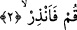
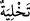
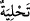

düşmana esir düşer. Kendisini yakalayanlar elini kesip üstündeki elbiselerini çıkarırlar.
Esir düşen bu kişi onların elinden kurtularak kavmine geri döner. Kendilerini bu düşman
kavim konusunda uyarmaktadır ama çırıl çıplaktır. İşte bu olaydan sonra uyarmada ve
korkutmada son derece kendisini yoran ve meşakkat sarfeden kimseye “enneziyrul
uryan/çıplak uyarıcı” denmeye başlanmıştır. Buraya kadar anlattıklarımızdan sonra
üzerinde durduğumuz âyet-i kerîmeye geri dönecek olursak ifâdenin önüyle arkasının
birbirine nasıl benzeştiğini artık tesbit edebiliriz. Şu hâlde elbiseye bürünen kimseye
“kalk ve uyar” denmesi “çıplak uyarıcı” mânâsından dolayı olmuş olur ve ifâde o
anlamın tam karşılığı, onunla hem lafız ve hem de mânâ itibâriyle ilgili olmuş olur.
2. Kalk, ve (insanları) uyar.
Yatağından “kalk ve” bütün insanları -inanmadıklarından- Allah’ın azâbına karşı
“uyar.” Bütün insanları diye tefsir etmemizin sebebi, Peygamber (s.a.) Efendimiz’in
bütün insanlara peygamber olarak gönderilmesinden dolayıdır. Onun dâvetinin
ulaşmadığı, yaptığı uyarının kulaklara varmadığı hiçbir millet yoktur.
Peygamber (s.a.) “uyarıcı” olarak gönderilmesinin yanısıra ayrıca “müjdeleyici”
olarak da gönderilmiş olduğu hâlde bu âyette yalnız “uyarma” görevi vurgulanmıştır.
Çünkü noktalı “h” harfiyle”
/tahliye/kötülükleri terketme”, “
/tahliyeden/güzel
huylarla süslenmekten” önce gelir. Ne demek istediğimizi açmak gerekirse insanlar, âsî
idiler ve korkutmayı hak etmişlerdi. Onun için ilk etapta korkutma ile karşı karşıya
kaldılar.
Fakir (Bursevî) der ki: Peygamber (s.a.)’in mescidinde bulunuyordum. Tam onun baş
ucunda iken Allah’a yönelmiş murâkabe hâlinde iken birden “kalk ve uyar” şeklinde bir
hitâbla karşılaştım. Bu ilâhî hitâbın çarpıcı şiddetinden büyük bir titreme ve şaşkınlığa
kapıldım. Birden bütün vücudumu bir titreme kapladı. Kendimin bu makamda zâhiren
insanları uyarma görevi ile görevlendirildiğimi ve bu emri aldığımı zannettim. Çünkü
insanların ekserisi Peygamber (s.a.)’in huzûrunda harem-i şerifte edebe aykırı
davranışlarda bulunuyorlardı. Hattâ bir keresinde Peygamber Efendimiz’e yapılan bu
edeb dışı hareketlere katlanamadığımdan dolayı şiddetli bir ağlama krizine kapıldım.
Bunun üzerine bana; “İşte bunlar, Allah’ın kendilerini lânetlediği, sağır kıldığı ve
gözlerini kör ettiği kimselerdir.” (Muhammed, 47/23) denildi. Sonra Allah’tan gelen
bir ilham sâyesinde anladım ki; ben sâdece kendi nefsime elçiyim ve kendi nefsimi
tezkiye etmeye; nefsimin güçlerini ıslah etmeye memurum ve bu konuda Allah bana
yardım edecektir.